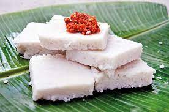

Sri Lankan Milk Rice
This is a Sri Lankan food. This is often prepared in special occasions such as birthdays. It is so delicious when served with "Katta Sambole". Now let's start making Milk Rice!

Ingredients
- 2 cups "Kekulu" Rice (Substitute : Basmati, Jasmine)
- 3 3/4 cups Water
- 400 milliliters Thick coconut milk ( 400ml = 1 2/3 cups = 1 can)
- 2 teaspoons Salt
Steps
- Wash your rice first, then drain water and put it into the rice cooker or instant pot (which is what I use here) or any pot you cook your rice usually.
- Add water and 1 tsp salt (keep rest of the salt for after). Cook your rice using your usual method. If you're using a rice cooker, turn on the cook switch. If you're using an instant pot, press the rice preset. All you do here is cook rice the normal way but with just a little bit of water than you’d normally use.
- Get your thick coconut milk (I use one 400ml can for 2 cups of rice) and the rest of the salt to it and dissolve well. Taste it and it should taste a little salty. If you have tasted Kiribath before your coconut milk should have a similar taste to Kiribath now. Adjust salt to your liking.
- Add the coconut milk to the cooked rice as soon as the rice is done cooking. Do NOT wait until the rice cools down.
- Mix your rice and coconut milk very well using a spoon until the rice grains breakdown and everything sticks together. You can transfer the rice to a banana leaf or a tray at this point and shape it. But if you still get the raw coconut milk smell, turn on the heat back again and cook for about 2- 3 more minutes on the stove or in the rice cooker. If you’re using an instant pot, press the “Keep warm” option and leave it covered for about 5 - 8 mins
Congradulations!You have made Milk Rice. Now serve it with a delicious "Katta Sambole". If you don't know how to make Katta Sambole you can learn it here.Katta Sambolaya Recipe